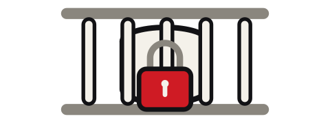
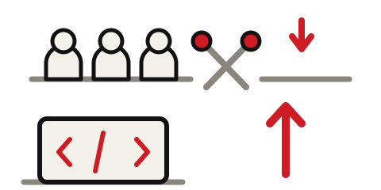
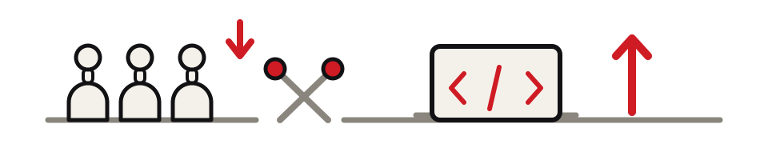
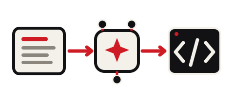
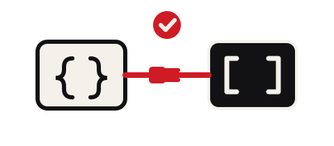
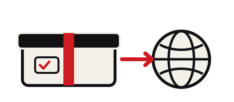

Pricing
Per-seat pricing is a tax on growth.
Every hire, every intern, every contractor, another line item. Infrastructure should not charge rent by the head.
OccupySaaS is a protest movement written in code. Laid-off engineers, armed with AI and public documentation, are building clean-room, open-source, drop-in replacements for the platforms that rent our own industry back to us, one seat at a time.
New ZeroAuthy v1.0.0-rc.1 is out
EST. OCTOBER 2026 / APACHE-2.0
Open source
Apache-2.0, forkable by anyone
Clean room
Built from public docs only
Drop-in compatible
Your existing SDKs keep working
Self-hosted
Your data stays on your servers
In 2011, Occupy Wall Street asked who the economy was really working for. In 2026 we are asking the same question about the cloud. The tools every company runs on are now toll booths, and the people who built them were shown the door.
Pricing
Every hire, every intern, every contractor, another line item. Infrastructure should not charge rent by the head.

Lock-in
Proprietary APIs, export walls and surprise price hikes keep customers captive. Compatible open alternatives set them free.


Labour
A million engineers were let go while the platforms kept growing. We still know how to ship. Now we ship it in the open.
We do not leak, decompile or copy anyone's code. Every project is rebuilt from public documentation and open standards, with AI doing the heavy lifting on the build side of a strict firewall, then proven compatible against the vendors' own public SDKs.
Public API references, open standards like OAuth 2.0 and OIDC, and published SDK behaviour become a written specification. Nothing confidential, nothing leaked, nothing from former employers.
Spec writers and builders stay separated. Each repo carries a CLEAN_ROOM.md
policy, and provenance is recorded for every fixture and reference.

AI agents implement from the spec alone, contracts first (openapi.yaml),
then code, then tests, under human review at every merge.

A compatibility laboratory runs the vendors' own public client SDKs against our server. If your existing code does not work unchanged, it is not done.

Apache-2.0. Self-hostable. Pluggable storage. No telemetry you did not ask for, and no seat counter.
What crosses the line, and what never does.
Allowed in
Never allowed
Identity and CRM: the two subscriptions almost every company pays for and almost nobody loves. ZeroAuthy has shipped its first release candidate, SalesCompel is still early, and both welcome contributors today.
A self-hostable identity server that speaks the Auth0 APIs. Point an existing Auth0 SDK at a ZeroAuthy tenant domain and log in.
Not in this release: WebAuthn, passkeys, SAML, WS-Federation, enterprise directories, CIBA, JAR and token exchange. Full compatibility notes
# try the release candidate (self-signed TLS, for testing only) $ docker run -d --name zeroauthy -p 8443:8443 \ -v zeroauthy-data:/data \ -e ZEROAUTHY_SERVER__LISTEN=:8443 \ -e ZEROAUTHY_SERVER__SYSTEM_HOST=localhost:8443 \ -e ZEROAUTHY_SERVER__TLS_SELF_SIGNED=true \ -e ZEROAUTHY_SERVER__TLS_SELF_SIGNED_CA_FILE=/data/ca.pem \ -e ZEROAUTHY_SECURITY__MASTER_KEY="$(openssl rand -base64 32)" \ -e ZEROAUTHY_BOOTSTRAP__ADMIN_EMAIL=you@example.com \ ghcr.io/occupysaas/zeroauthy:1.0.0-rc.1
A free, open-source Salesforce replacement with a tenant-isolated Go/PostgreSQL core, a Vue record editor, and a compatibility laboratory.
Still early: the README lists exactly which features work today. Read the project README
# run the compatibility laboratory $ npm ci --prefix compat/clients/node --ignore-scripts $ npm --prefix compat/clients/node run check
Your code, your data, your servers. No seats to count, no renewals to dread, and nobody who can switch it off but you.
Every category on this board is a monthly invoice somewhere. The movement picks the next target in public. Bring a spec, a use case, or a grudge.
Occupied
ZeroAuthy, an Auth0-compatible login, token and tenant server.
Occupied
SalesCompel, Salesforce-compatible records and a REST API.
Proposed
Team knowledge bases that do not lock your writing behind a seat licence.
Proposed
Tickets, sprints and boards with a compatible API for existing integrations.
Proposed
SDK-compatible flag evaluation you can run next to your own services.
Proposed
Logs, metrics and traces without per-gigabyte ransom notes.
Proposed
Help desk, inbox and knowledge base, priced at zero agents.
Your pick
Open an issue and make the case.
Proposed categories are open for discussion, not commitments. Names of existing products are used only to describe compatibility.
Occupy Wall Street began on 17 September 2011 in Zuccotti Park, New York City, with a simple frame: the 1% and the 99%. It had no leaders, made decisions in open assemblies, and spread to hundreds of cities.
OccupySaaS borrows that spirit and swaps tents for terminals. No marches, no property damage. Just working software, published under an open licence, that anyone can run.
We are the 99%.
Protesters set up camp in Zuccotti Park in Manhattan's Financial District.
Occupy camps and general assemblies appear in cities around the world.
The camp ends; the language of the 1% and the 99% does not.
Wave after wave of cuts across the industry while subscription prices keep climbing.
The first clean-room rebuild opens its repo under Apache-2.0.
The second tower. More to come, decided in the open.
The first release candidate: binaries and a container image anyone can run today.
You do not need permission, a badge or a manager. You need a laptop and an afternoon.
Pick an open issue, follow the clean-room policy, open a pull request.
Run a release against your real SDKs and tell us exactly where it breaks.
Turn public docs into precise, testable specifications for the builders.
Star the repos, share the site, and tell your CFO what you are paying per seat.
Straight answers about the method, the licence and what is ready today.
Still unsure? Ask in Discord.
Clean-room reimplementation is a long-established way to build compatible software: you work only from public information and independently write your own code. Interoperating with an API is not the same as copying a product. Each project publishes its clean-room policy and source provenance so anyone can check the work. This page is not legal advice. If you are adopting a project for a business, talk to your own counsel.
No. OccupySaaS and its projects are independent and not affiliated with, endorsed by, or sponsored by any vendor named on this site. Product names are used only to describe compatibility.
Yes, but never with confidential knowledge from a former employer. Contributors work only from public material, and anyone with relevant inside knowledge should stay on the public-spec side of the firewall or sit that project out. When in doubt, read the project's CLEAN_ROOM.md and ask first.
Because the giants had thousands of engineers and we have a movement. AI agents let a small group turn a precise spec into working code quickly. Humans write the specs, review every change, and own the result, and compatibility tests against real SDKs decide what counts as done.
Portability. A Go project compiles to a single self-contained binary, so self-hosting means dropping one file onto a server or into a Docker or Podman image. No installer, no runtime to set up, no tree of shared libraries to keep in sync. The same toolchain cross-compiles for Linux, macOS, Windows, x86 and ARM, and the result fits in a minimal container image. If you are leaving a SaaS vendor, the replacement should be this easy to carry.
Nothing is wrong with Rust, and we are not against it. Go was picked for the first projects because it makes the one-file, container-friendly drop-in the default with very little build setup. Rust can get there too; Go just gets there more simply for the kind of servers we are building.
Rust recreations of these projects are welcome. They just have not been made yet. The specs, API contracts and compatibility tests are language-neutral, so a Rust port can be checked against the same SDKs. If you want to start one, open an issue and say which project.
Not yet. ZeroAuthy's first release candidate, v1.0.0-rc.1, is an early preview, and its compatibility matrix lists the gaps. SalesCompel is earlier still, and its README says exactly which features work today. Try them, break them, and file issues.
Nothing. Every project is released under the Apache License 2.0. Run it, fork it, sell services around it. The only thing we ask is that you contribute back what you can.